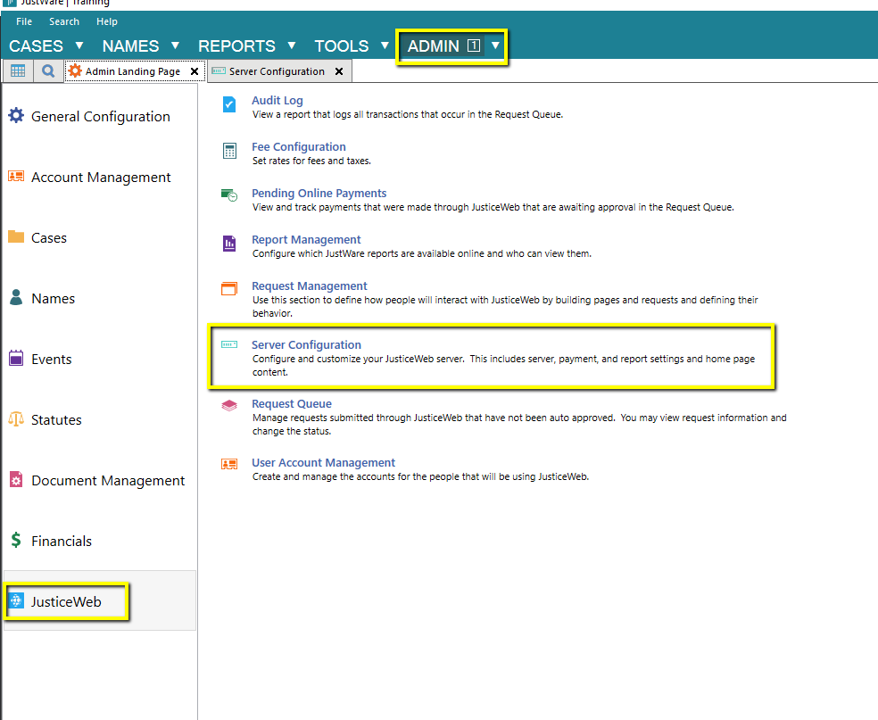
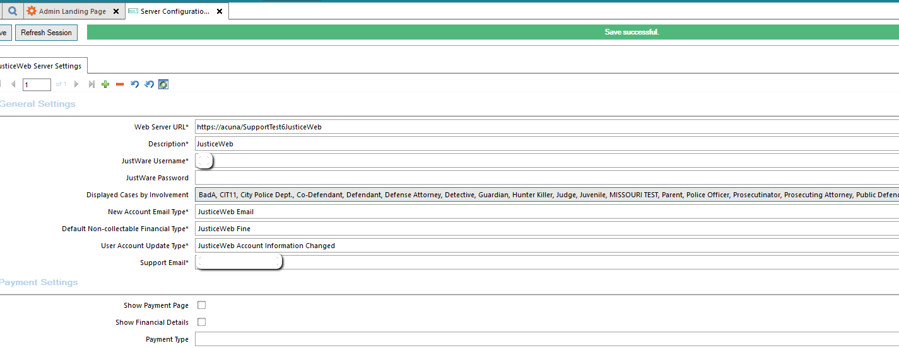

Error inserting the JusticeWeb server record: Error opening the encryption key. Make sure you are a member of the correct database role. Please create a master key in the database or open the master key in the session before performing this operation.
When making changes in the JWeb Configuration in JustWare, a Red Bar error will occur. The Error states there is a problem with the Encryption Key. This can happen if the DB has been restored from another location where JWeb was installed. Under the database there should be an encryption key and license folder with Jweb info. Delete those two entries and then run the provided script to rebuild them.
Run the following SQL script on the database:
JWeb Encryption Key FixOpen JustWare and go to Admin -> JusticeWeb -> Server Configuration. Make an update to the screen and save.
Your encryption key issue should now be resolved
